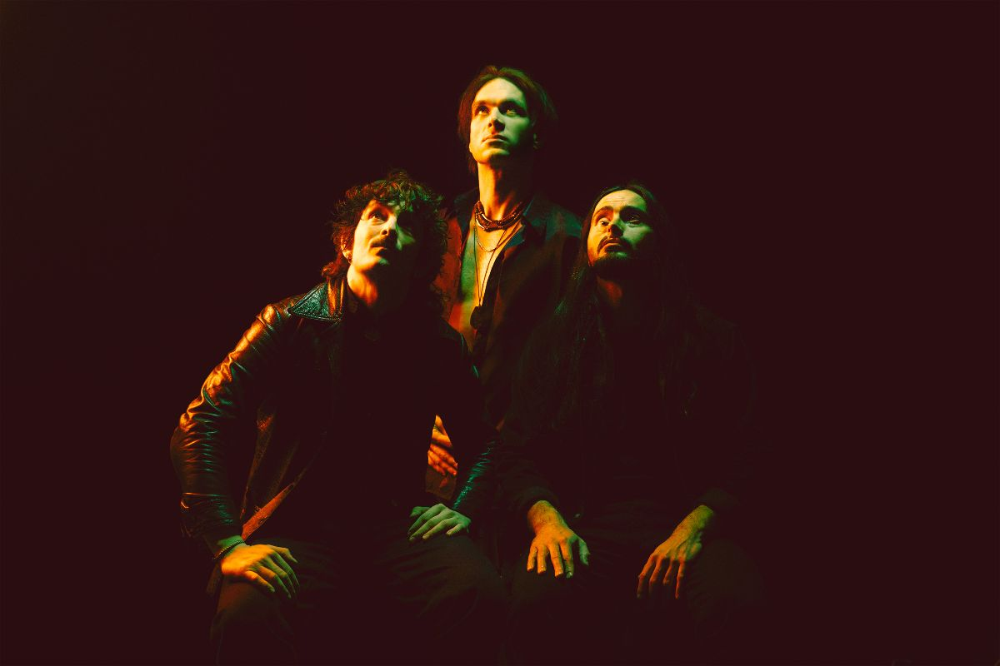

[E]n la cartografía del rock, los cruces de caminos no son solo geografía; son pactos de sangre. Casi un siglo después de Robert Johnson, el trío suizo Dirty Sound Magnet enfrenta su propio punto de no retorno con "Me and My Shadow", un álbum que no es un simple lanzamiento, sino un manifiesto de supervivencia absoluta.
El disco, disponible desde el 30 de enero de 2026, fue forjado en el instinto crudo de la carretera. Tras ejecutar más de 120 conciertos al año, la banda se encerró en los Fat&Holy Records de Darmstadt, Alemania, para grabar sin planes, confiando únicamente en la intuición acumulada tras 800 shows. Bajo la alquimia de René Hofmann, transformaron el agotamiento del tour en una síntesis poderosa de art rock y psicodelia progresiva.

Pero el verdadero núcleo del álbum es un milagro médico. Dos semanas antes de entrar al estudio, Stavros, líder de la banda, estuvo al borde de la muerte tras una intoxicación accidental. Fue en la fragilidad de una cama de hospital donde el disco terminó de gestarse. "No hay forma de que este sea el final", fue la certeza que lo devolvió de las sombras. Esa energía vital es la que ahora emana de cada track de "Me and My Shadow".